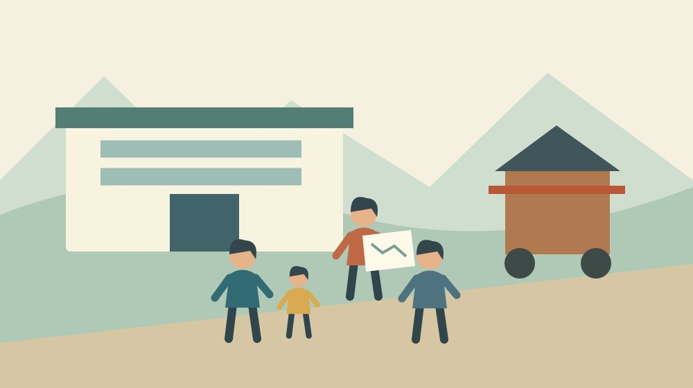

森町の多文化交流サロン｜祭り見学の申込み

Q. 森町の多文化交流サロンで祭りを見に行くには、申込みが要る？
2026年11月7日の祭り見学は申込みが必要です。午後2時～4時、森町役場入口前集合、定員10名。参加は無料で、飲食などの購入費は各自負担です。10月25日から日程が変わっています。通常回の「申込不要」と区別し、町公式ページの専用フォームで受付状況を確認してください。
祭りに迎える準備を、参加する側も支えたい
森町の祭りを初めて見る人を迎えるには、集合場所を伝え、歩く速さを合わせ、屋台との距離に気を配る人が要ります。地域の行事を支えてきた方々に加え、その場を知らない人へ橋を架ける案内役の仕事があります。私は、その段取りを「無料だから気軽」の一言で済ませたくありません。
大石浩之（磐田市／不動産業）です。今回取り上げるのは、森町の多文化交流サロンが行う祭り見学です。私は町の外で暮らす事業者の立場から、参加するご家族と、迎える人の両方が困らない準備を考えます。体験談ではなく、公表情報を読んだ私の意見として書きます。
同じサロンでも、普段の会議室での交流と、町なかを歩く特別回では準備が違います。普段の案内だけを覚えていると、集合場所や申込みを取り違えます。今回は「通常回のルールを、そのまま祭り見学へ持ち込まない」が出発点です。
事実整理｜11月7日は事前申込みのある特別回
森町公式「多文化交流サロン」は、2026年11月7日に森の祭りを見に行くと案内しています。確認日は2026年10月24日、ページの更新日は10月15日です。予定表には、10月25日から11月7日へ変更したことが明記されています。記事の公開日と開催日は別です。
祭り見学の時間は午後2時から午後4時まで。集合場所は森町役場の入口前です。通常のサロンで案内される町民生活センター第1会議室とは異なります。家族へ場所を送るときは、施設名だけでなく「役場入口前」という集合の指定まで残してください。
定員は10名、参加費は無料です。ただし、食べ物などを購入する場合は自分で支払うと記されています。無料になるのは案内された参加費であって、現地での買い物代すべてではありません。財布を持つ人と、子どもの購入について相談する相手を決めておくと話が早くなります。
11月7日の回には専用の申込フォームへのリンクがあります。一方、通常のサロンの説明は「申込不要・出入り自由」です。同じページに二つの案内が載っています。意外に見落としやすいのは、この違いです。特別回の見出しを開いて確認する必要があります。
町公式本文には、申込締切と残り枠の表示がありません。定員10名という数字は、今から10名申し込めるという意味ではありません。本記事では空き枠を確認できていません。フォームの受付表示と町の案内を確かめ、受付終了なら参加できる前提で予定を組まないでください。
集団で見学するための約束を先に共有する
森町が祭り見学の案内で求めているのは、グループで動くこと、歩きやすい靴で来ること、屋台を遠くから見ることです。個人で自由に散策する催しとは行動の条件が違います。参加する本人に、この三つを短い言葉で伝えてから申し込む順序を私は勧めます。
グループ行動をするなら、集合から終了までの時間を空けておきたいところです。ただし、途中参加や途中退出の可否は本文で確認できません。仕事や子どもの用事と重なる場合は、通常回が出入り自由であることを根拠にせず、特別回の扱いを問い合わせる必要があります。
歩きやすい靴という指定を読んでも、道の長さや休憩回数までは分かりません。長く歩くことに不安がある方は、本人の希望を聞き、どの程度の移動を想定するか相談してください。車いすやベビーカーの対応があるとも、ないとも、今回の本文だけでは断定できません。
屋台を遠くから見るという案内は、近づいて撮影する予定を組まないための材料になります。案内役が止まった場所で待つことも、見学の一部です。祭りの担い手が動く空間を尊重する姿勢については、森町の祭りを支える担い手でも考えています。
家族や職場から伝えるなら、短い一文を重ねる
多文化交流サロンは、地域の住民と、森町に住む人・働く外国人との交流を目的としています。町公式では、やさしい日本語で文化や言葉、食事の話をしたり、ゲームをしたりする場と説明しています。大人も子どもも、友達と一緒に来られる案内です。
私なら、参加を勧める前に「11月7日、土曜日」「午後2時、役場入口前」「申込みが必要」と、一つずつ伝えます。長い文に日付と費用と注意事項を詰めるより、本人が予定表へ写せる順序にするためです。これは町の指定書式ではなく、私からの伝え方の提案です。
送る情報は、町公式ページへのリンクと、参加する回を特定する一文が基本になります。ページ全体の画像だけでは、通常回の説明と特別回の説明を区別しにくくなります。古い10月25日の予定を持っている人には、変更された部分だけでなく、新しい日付も一緒に知らせてください。
会社の同僚が手伝う場合も、参加する本人の意思を先に確かめたいと思います。「地域に慣れるためだから」と周囲だけで決めると、休日の予定や集団行動への不安が置き去りになります。参加しない選択も残し、必要な説明を本人が選べる状態を作るのが私の考えです。
申込フォームを開いた際は、求められる項目をその画面で確かめます。この記事では入力項目や送信後の受付方法まで確認していません。代理入力の可否を決めつけず、本人と内容を確認してください。申込みを送った記録と、参加確定の案内が同じものかも区別して残すと安心です。
良い点｜交流の入口と、手伝う人の入り方がある
森町の多文化交流サロンの良い点は、やさしい日本語で生活の話ができる入口があることです。地域の行事を知らない人が、説明を受けながら参加を考えられます。私には、行事の日だけ人を集めるのではなく、日常の相談へつながる場として価値があると感じられます。
祭り見学について、集合場所、時間、費用、定員、歩き方の注意が一つのページで示されています。私は、案内する人が毎回同じ説明を口頭で繰り返さなくてよい点も評価します。参加者が事前に読むことは、当日の案内を担う方の説明時間を支える行動になります。
ボランティアの参加方法にも、継続するための工夫があります。町公式では、登録者へ開催前にメール等で参加できる人を募り、その中から数名へ依頼するとしています。予定に合わせて参加でき、外国語を話せなくても応募できると記されています。親子での参加も可能です。
私は、毎回の出席を前提にしない仕組みを評価します。仕事や家族の用事がある人にも、手伝える日の入口が残るからです。ただし、登録すれば希望した回に必ず参加できるとは書かれていません。募集への返事と、実際の依頼を分けて考える必要があります。
注文したい点｜特別回の未確定事項を見つけやすく
森町の祭り見学の案内には、締切や残り枠など、申込み直前に知りたい情報が本文だけではそろっていません。私は、受付中か終了かを特別回の見出し近くでも確認できると助かると思います。フォームへ進む前に判断できれば、参加する側にも案内する側にも手戻りが減ります。
私が迷うのは、初めての参加者へどこまで準備を求めるかです。細かい確認を増やしすぎると、交流の入口が重くなります。一方、歩く距離や集合後の流れが分からないままでは、参加しにくいご家族もいます。全員に長い説明を課すより、相談したい人が連絡できる導線がほしいと考えます。
雨天時の扱い、遅れた場合の連絡先、終了する場所も、今回確認した本文では分かりません。私は、中止や変更が出た際にどこを見るかが明記されると助かると思います。分からない点を想像で埋めず、参加前に町へ尋ねる項目として一枚に残すのが現実的です。
質問する側も、まとまった形で問い合わせたいところです。「行けますか」だけでなく、参加希望人数、移動上の相談、確認したい回を整理すると担当者が答えやすくなります。残り枠を尋ねる人と集合場所を尋ねる人が家族内で別々に動くより、連絡を一人にまとめる方法を私は提案します。
対案・結論｜今日は古い予定を直し、受付を確かめる
森町の多文化交流サロンへ参加する準備は、2026年11月7日の予定を家族のカレンダーへ書くことから始められます。10月25日の記載が残っていれば変更します。私は、日付の訂正が済むまで申込手続きを急がないほうがよいと考えます。送迎する人にも同じ日付を伝えるためです。
次に、町公式ページの特別回の見出しから専用フォームを開きます。受付状態と入力条件を確認し、参加する本人と内容を確かめます。締切が見つからない場合は、自分で期限を推測しないでください。受付が済んだ記録は、あとで家族が見つけられる場所に残します。
移動の確認は申込みとは別の仕事です。森町公式「森町の公共交通について」は、町営バスや鉄道・民間路線バス・タクシーの案内へ進む入口を用意しています。ページにリンクがあることと、見学の集合時刻に間に合う便があることは同じではありません。利用予定日の時刻を確かめる必要があります。
車で送ってもらう場合は、役場入口前集合という指定を、そのまま駐車場所の許可だと受け取らないでください。祭り当日の車の移動は、森のまつり交通規制の確認記事も参照できます。送迎場所は最新案内に沿って家族と相談します。
バスを利用するご家族なら、時刻表を見たうえで当日の運行状況を確認します。秋葉バスロケの使い方は、その補助になります。位置情報が見られても、乗継ぎや帰りの便が確保されるわけではありません。午後4時以降の帰宅手段も別に決めます。
家族に残す記録｜参加者と手伝う人の予定を分ける
祭り見学の記録には、参加する人の名前、開催日、集合時刻、集合場所、申込日、確認したページを残します。これは私が提案する家庭用のメモで、町への提出書類ではありません。本人以外が送迎を担当する場合は、出発と迎えの連絡方法も添えると使いやすくなります。
ボランティアとして関わる人は、参加者としての申込みと、登録者への協力依頼を混ぜないでください。町公式にはそれぞれ別の案内があります。手伝う側になった場合の役割、集合時刻、終了後の作業は、実際の依頼時に確かめます。本記事から一律の当番や負担を決めることはできません。
共有するメモに、必要以上の個人情報を書き込む必要はありません。職場で予定を伝えるなら、参加希望と集合の情報で足りる場面もあります。個人の事情を誰に伝えるかは本人と相談します。困りごとを伝えることと、周囲へ広く知らせることは分けて考えたいと思います。
大石の視点｜地域に入る入口にも段取りが要る
森町の多文化交流サロンを私は、地域を知る機会を人が支える仕組みとして見ています。不動産の案内でも、地図上で目的地が分かることと、その日に無理なく行けることは別の問題です。今回も、集合場所、時間、費用、帰路がそろって初めて参加を具体的に考えられます。
私はこう考えます。交流の場を増やす話だけで、案内役の時間が自然に増えるわけではありません。参加する側が日付を直し、申込みを済ませ、集団行動の約束を読んでおく。その小さな準備を引き受けることが、迎える人を支えます。これは現場で見た実話ではなく、公表された条件からの私の判断です。
11月7日に参加するかどうかを、今ここで決める必要はありません。ただ、10月25日のままの予定が残っていないかは今日確認できます。日付と申込みの違いを一人へ正しく伝えられれば、それだけでも参加の準備は前へ進みます。
FAQ｜祭り見学の前に確かめたいこと
森町の祭り見学は、通常回と申込みの条件が異なります。参加費とボランティアの入り方も分けて確認してください。
通常のサロンと同じように、申込みなしで参加できますか？
2026年11月7日の祭り見学は申込みが必要です。通常回の「申込不要・出入り自由」とは異なります。町公式ページの専用フォームで受付状況を確認してください。定員は10名ですが、残り枠を示す数字ではありません。締切と受付完了の扱いは本記事では確認できていないため、画面の案内や町への問い合わせで確かめてください。
無料なら、買い物のお金も用意しなくてよいですか？
参加費は無料ですが、食べ物などを購入する場合は各自負担です。町公式が無料と案内している範囲を、交通費や現地の買い物代まで広げて考えないでください。家族で参加する場合は、財布を持つ人や子どもの買い物の相談先を先に決める方法があります。購入の必要性や品物の内容は、今回の案内では確認していません。
外国語が話せなくてもボランティアに応募できますか？
町公式では、外国語が話せなくても応募でき、親子参加も可能としています。登録者へ開催前に参加できる人を募り、その中から数名へ依頼する仕組みです。登録だけで毎回の参加が確定するものではありません。祭り見学の参加者用申込みとは分け、協力を希望する場合はボランティア募集の案内と実際の依頼内容を確認してください。
出典・確認日
2026年10月確認。開催・制度の数値は公式情報、評価と段取りの提案は執筆者の意見です。
- 森町：多文化交流サロン（2026年10月24日確認）
- 森町：森町の公共交通について（2026年10月24日確認）
開催日時、取扱条件、制度・数値は変わる場合があります。実際の利用前に主催者・担当窓口の最新案内を確認してください。個別の判断が必要な場合は、担当窓口や関係する専門家へご相談ください。